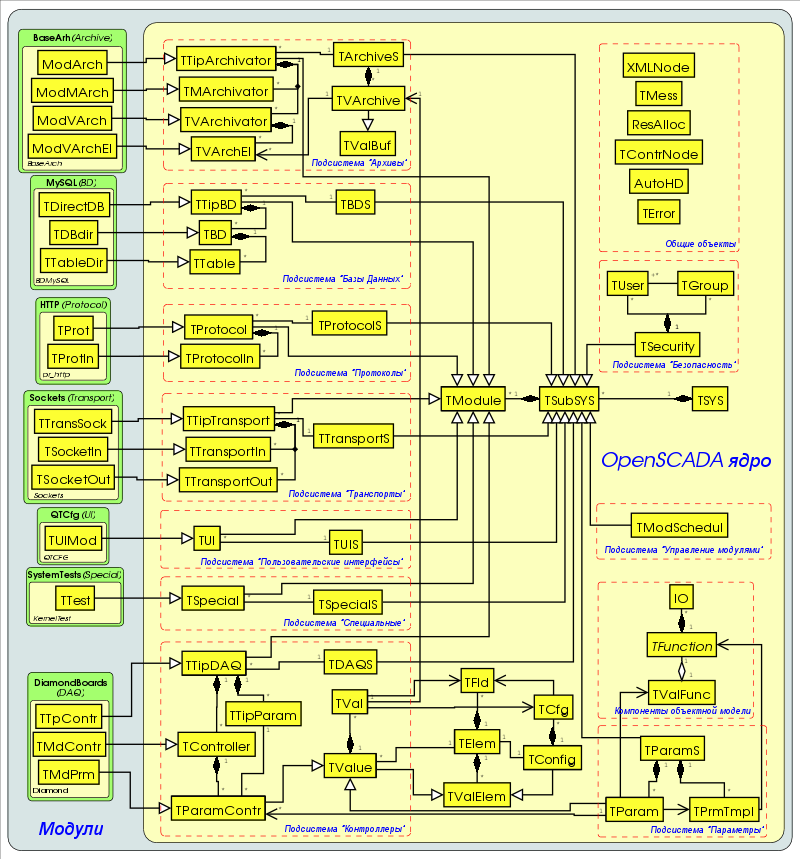
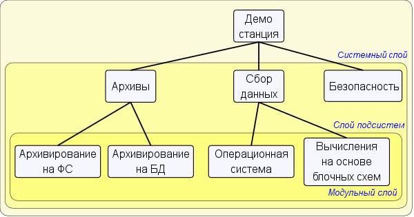
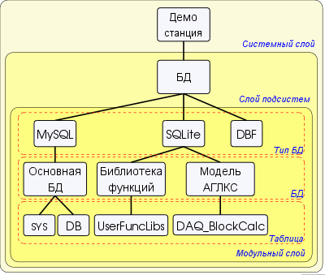
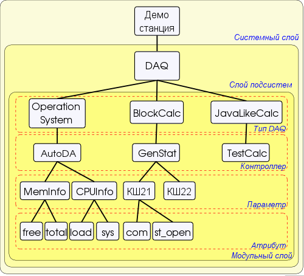
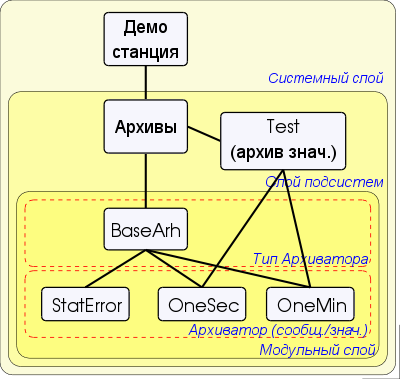
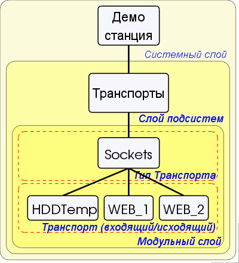
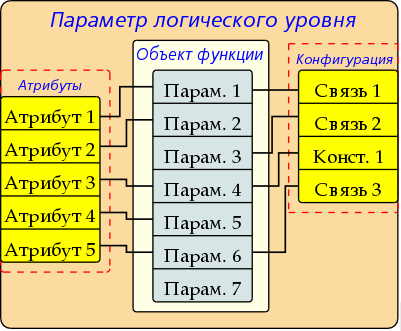
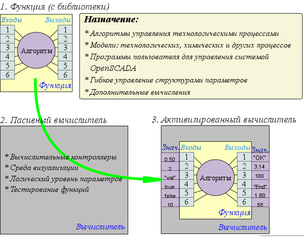
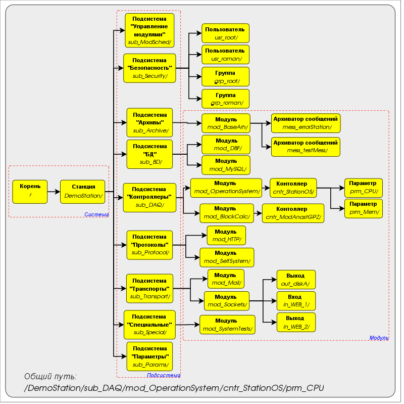

Cодержит
исчерпывающее описание API системы OpenSCADA. Также содержится
руководство по программированию ядра системы и созданию
модулей для неё.
1 Внутренняя структура, API системы OpenSCADA.

Рис. 1. Статическая диаграмма классов
2 Общая структура системы. Модульность (TSubSYS, TModule)
Корнем, от которого строится вся система, является объект
TSYS. Корень содержит подсистемы (TSubSYS). Подсистемы могут быть:
обычными и модульными. Отличие модульных подсистем четко
прослеживается на рис. 1. Так, модульные подсистемы обязательно
содержат список модульных объектов (TModule), например подсистема
архивы TArchiveS содержит модульные объекты TTipArchivators.
В тоже время обычная подсистема таких объектов не содержит.
Например подсистема безопасности TSeсurity (рис.2).

Рис. 2. Слоистая структура системы OpenSCADA.
В процессе инициализации корня (TSYS) определяется глобальная
переменная SYS. Переменная SYS может использоваться
для прямого обращения к корню системы из любого её узла.
Инициализация корня выполняется единожды из главной вызывающей
функции. После запуска управление захватывается объектом системы
до остановки. Корневой объект концентрирует все обшесистемные
функции системы OpenSCADA.
Продолжением корневого объекта (TSYS), выполняющего функции
обслуживания потока системных сообщений, выступает объект TMess. Объект
доступен посредством глобальной переменной Mess, которая
инициализируется корнем системы. Объект содержит функции кодирования,
декодирования и локализации сообщений.
В подсистемах (TSubSYS) реализуются функции характерные
для каждой подсистемы индивидуально, с общим для всех
подсистем доступом через объект TSubSYS. Модульная подсистема имеет
возможность расширять функциональность посредством модулей.
Для этой цели модульная подсистема предоставляет доступ
к модулям своего типа в виде модульных объектов.
Модуль – составная часть модульной подсистемы. В общем,
для всех модулей и их подсистем, модуль предоставляет
информацию о себе, своём происхождении и экспортируемых
функциях. Отдельно взятый модуль реализует функциональность
в соответствии со своими потребностями.
AutoHD<TUIS> ui(); — Прямой доступ к подсистеме «Пользовательские интерфейсы».
AutoHD<TArchiveS> archive(); — Прямой доступ к подсистеме «Архивы».
AutoHD<TBDS> db(); — Прямой доступ к подсистеме «Базы данных».
AutoHD<TControllerS> daq(); — Прямой доступ к подсистеме «Сбор данных».
AutoHD<TProtocolS> protocol(); — Прямой доступ к подсистеме «Протоколы».
AutoHD<TTransportS> transport(); — Прямой доступ к подсистеме «Транспорты».
AutoHD<TSpecialS> special(); — Прямой доступ к подсистеме «Специальные».
AutoHD<TParamS> param(); — Прямой доступ к подсистеме «Параметры».
AutoHD<TModSchedul> modSchedul(); — Прямой доступ к подсистеме «Управление модулями».
AutoHD<TSeсurity> seсurity(); — Прямой доступ к подсистеме «Безопасность».
string cfgFile(); — Имя конфигурационного файла системы.
XMLNode &cfgRoot(); — Разобранная структура конфигурационного файла.
string workDB() — Полное имя рабочей БД.
bool sysOptCfg() — Признак – «Загружать системные параметры только из конфигурационного файла».
string optDescr( ); — Локализованная помощь по опциям командной строки и параметрам конфигурационного файла.
static void sighandler( int signal ); — Функция стандартного обработчика сигналов.
unsigned long long sysClk( ); — Расчётная частота процессора на котором функционирует система (Гц).
void clkCalc( ); – Расчёт частоты процессора
на котором работает система. Вызывается периодически
для систем с переменной частотой процессора.
unsigned long long shrtCnt( ); — Функция замера малых интервалов времени по счетчику тактов процессора. Возвращает значение счетчика тактов процессора.
static long TZ(); — Время системного тика процессора.
static long long curTime(); — Текущее время в микросекундах с начала эпохи (01.01.1970).
static bool eventWait( bool &m_mess_r_stat, bool exempl, const string &loc, time_t time = 0 );
— Функция ожидания события <exempl> для переменной
<m_mess_r_stat> в течении указанного интервала времени
<time> для источника <loc>.
static string int2str( int val, IntView view = Dec ); — Функция преобразования целого в строку в виде <view>.
static string ll2str( long long val, IntView view = Dec ); — Функция преобразования длинного целого (64бит) в строку в виде view.
static string real2str( double val ); — Функция преобразования вещественного в строку.
string codeConvIn( const string &fromCH, const string &mess); — Конвертация кодировки сообщения во внутреннюю кодировку системы.
string codeConvOut( const string &toCH, const string &mess); — Конвертация кодировки сообщения из внутренней кодировки системы.
static const char *I18N( const char *mess, const char *d_name = NULL ); — Получение сообщения на языке системы.
static string I18Ns( const string &mess, const char *d_name = NULL ); — Получение сообщения на языке системы.
static bool chkPattern( const string &val, const string &patern ); — Проверка принадлежности строки к шаблону. Поддерживаются специальные символы обобщения '*' и '?'.
string lang( ); — Язык системы (локализация).
string &charset( ); — Системная кодировка.
int logDirect( ); — Приемники которым направляются системные сообщения (stdout, stderr, syslog, archive);
int messLevel( ); — Уровень, ниже которого сообщения игнорируются.
void lang( const string 〈 ); — Установка языка системы (локализации).
void logDirect(int dir); — Установка приемников которым направляются системные сообщения. Для <dir> используется битовая маска. Где:
1 – в syslog;
2 – в stdout;
4 – в stderr;
8 – в архив.
void messLevel(int level); — Установка минимального уровня обрабатываемых сообщений.
void put( const char *categ, Type level, const char *fmt, ... ); — Сформировать сообщение за текущее время.
void get( time_t b_tm, time_t e_tm, vector<TMess::SRec> & recs, const string &category = "", Type level = Debug ); — Запросить сообщения из архива за промежуток времени <b_tm> – e_tm в соответствии с шаблоном категории <category> и минимальным уровнем <level>.
Подсистема «Базы Данных» представлена объектом TBDS который содержит модульные объекты типов БД TTipBD. Каждый тип базы данных содержит объекты отдельно взятых баз данных данного типа TBD. Каждая БД, в свою очередь, содержит объекты своих таблиц TTable (рис. 3).

Рис. 3. Слоистая структура подсистемы БД.
Подсистема
представляет базовые функции для доступа к типам БД,
а также обобщающие функции для манипуляции с базами
данных и таблицами. Так, для скрытия источника данных,
которым может быть и конфигурационный файл, предоставляются
функции абстрактного доступа к источнику данных. А для
хранения обще-системных данных предоставляется системная таблица
и функции абстрактного доступа к ней. Следовательно,
обще-системные данные могут храниться как в конфигурационном
файле, так и в таблице БД. Приоритетным источником,
в таком случае, является таблица БД.
Являясь модульным объектом, тип БД (TTipBD) содержит доступ
к реализации механизма той или иной БД. Доступ производится
посредством открытых БД модуля отдельно взятого типа БД.
Открываемые/регистрированные БД описываются в таблице
открываемых БД или в конфигурационном файле. Существует,
так называемая, рабочая БД, которая открывается всегда
и указывается в конфигурационном файле.
БД поддерживающие SQL-запросы могут предоставлять доступ
основанный на прямых SQL-запросах.
В процессе использования, компоненты системы OpenSCADA открывают
таблицы (TTable) в доступных БД и работают с ними.
3.1 Объект подсистемы «Базы Данных» (TBDS)
Наследует:
TSubSYS.
Публичные методы:
int subVer( ); — Версия подсистемы.
void subLoad( ); — Загрузка подсистемы.
void subSave( ); — Сохранение подсистемы.
AutoHD<TTable> open( const string &bdn, bool create = false ); — Открытие таблицы <bdn> БД по её полному пути с созданием <create> в случае отсутствия.
void close( const string &bdn, bool del = false ); — Закрытие таблицы <bdn> БД по её полному пути с возможностью удаления после закрытия <del>.
bool dataSeek( const string &bdn, const string &path, int lev, TConfig &cfg );
— Общее сканирование записей источника данных. В качестве
источника выступает конфигурационный файл или БД. В случае
отсутствия БД используется конфигурационный файл.
bool dataGet( const string &bdn, const string &path, TConfig &cfg ); — Получение записи из источника данных (БД или конфигурационный файл).
void dataSet( const string &bdn, const string &path, TConfig &cfg ); — Установить/сохранить запись в источнике данных (БД или конфигурационный файл).
void dataDel( const string &bdn, const string &path, TConfig &cfg ); — Удаление записи из источника данных (БД или конфигурационный файл).
static string genDBGet(const string &path, const string &oval = "", bool onlyCfg = false );
— Получить обще-системные данные из конфигурационного файла
или системной таблицы. Если данные отсутствуют
то возвращается значений <oval>.
static void genDBSet(const string &path, const string &val); — Установить/сохранить обще-системные данные в конфигурационном файле или системной таблице.
string SysBD(); — Полное имя системной таблицы.
string openBD(); — Полное имя таблицы с описанием зарегистрированных БД.
TElem &openDB_E() — Структура таблицы зарегистрированных БД.
AutoHD<TTipBD> at(const string &iid) — Обращение к модулю БД (типу БД).
string optDescr( ); — Локализованная помощь по опциям командной строки и параметрам конфигурационного файла.
3.2 Модульный объект типов баз данных (TTipBD)
Наследует:
TModule.
Наследуется:
Корневыми объектами модулей подсистемы «БД».
Публичные методы:
bool fullDeleteDB(); — Признак полного удаления БД.
void list( vector<string> &list ); — Список зарегистрированных (открытых) БД.
bool openStat( const string &idb ); — Проверка на наличие указанной открытой БД.
void open( const string &iid ); — Открытие БД.
void close( const string &iid, bool erase = false ); — Закрытие БД. Если установлен признак <erase> то БД будет полностью удалена.
Подсистема “Сбор данных” представлена объектом TDAQS, который содержит модульные объекты типов источников данных TTipDAQ. Объект типов источников данных содержит объекты контроллеров TController и объекты типов параметров TTipParam.
Объекты типов параметров предоставляются модулем контроллера
и содержат структуру БД отдельных типов параметров
(аналоговые, дискретные ...). Объекты контроллеров содержат объекты
параметров TParamContr. Каждый параметр ассоциируется
с одним из типов параметров. Для хранения атрибутов,
параметр наследуется от объекта значений TValue, который и содержит значения атрибутов TVal (рис. 4).

Рис. 4. Слоистая структура подсистемы сбора данных.
Подсистема содержит типы источников данных. Источником может выступать
практически любая сущность предоставляющая какие либо данные.
Тип источника может делится на отдельные источники
(контроллеры) в пределах конкретного типа. Например, если взять
данные из операционной системы (ОС), то под отдельным
источником можно понимать операционную систему отдельного ПК.
Источник данных (контроллер) делится, или содержит, параметры.
Под параметром подразумевается какая-то часть источника данных.
В случае с ОС это будет, например: расход оперативной
памяти, частота процессора и много других составных частей.
Параметр, в свою очередь, содержит атрибуты, которые
и предоставляют данные. Кроме основных данных атрибутами могут
предоставляться и сопутствующие или детализирующие данные.
В случае тойже ОС и расхода памяти, атрибутами может
предоставляться не только занятая память, а также
и сколько её всего, сколько в свопе и т.д.
4.1 Объект подсистемы «Сбор данных» (TDAQS)
Наследует:
TSubSYS, TElem.
Публичные методы:
int subVer( ); — Версия подсистемы.
void subLoad( ); — Загрузка подсистемы.
void subSave( ); — Сохранение подсистемы.
virtual void subStart( ); — Запуск подсистемы.
virtual void subStop( ); — Останов подсистемы.
AutoHD<TTipDAQ> at( const string &name ); — Подключение к типу источника данных.
TElem &errE(); — Структура атрибута(ов) ошибок параметров.
AutoHD<TVal> vlAt( const string &name ); — Подключение к атрибуту.
Защищённые методы:
void cntrCmd_( const string &a_path, XMLNode *opt, TCntrNode::Command cmd ); — Обработка команд интерфейса управления системой.
TConfig *vlCfg() — Получение связанного объекта конфигурации. Если возвращается NULL то отсутствует связанный объект конфигурации.
void vlCfg( TConfig *cfg ); — Установка связанного объекта конфигурации <cfg>.
bool vlElemPresent( TElem *Val El ); — Проверка на включенность элемента атрибутов <ValEl>.
void vlElemAtt( TElem *Val El ); — Подключение структуры данных <ValEl>.
void vlElemDet( TElem *Val El ); — Отключение структуры данных <ValEl>.
TElem &vlElem( const string &name ); — Получить структуру данных по её имени <name>.
virtual void vlSet( TVal &val ); — Упреждающая функция установки значения. Используется для прямой записи.
virtual void vlGet( TVal &val ); — Упреждающая функция получения значения. Используется для прямого чтения.
4.7 Объект атрибута (TVal).
Наследует:
TCntrNode.
Данные:
Дополнительные флаги к объекту TFld (define):
FLD_DRD — флаг прямого чтения значения;
FLD_DWR — флаг прямой записи значения.
Значения ошибки для различных типов данных:
EVAL_BOOL — Значение ошибки логического (2);
EVAL_INT — Значение ошибки целого (-2147483647);
EVAL_REAL — Значение ошибки вещественного (-3.3E308);
EVAL_STR — Значение ошибки строкового ("<EVAL>").
Публичные методы:
TVal(TFld &fld, TValue *owner); — Инициализация как хранилище динамических данных.
TVal(TCfg &cfg, TValue *owner); — Инициализация как отражение статических данных (БД).
const string &name(); — Имя атрибута.
TFld &fld(); — Описатель структуры атрибута.
string getSEL( long long *tm = NULL, bool sys = false ); — Запрос значения выборочного типа на указанное время <tm>. Если NULL то возвратится последнее значение.
string getS( long long *tm = NULL, bool sys = false ); — Запрос значения строкового типа на указанное время <tm>. Если NULL то возвратится последнее значение.
double getR( long long *tm = NULL, bool sys = false ); — Запрос значения вещественного типа на указанное время <tm>. Если NULL то возвратится последнее значение.
int getI( long long *tm = NULL, bool sys = false ); — Запрос значения целого типа на указанное время <tm>. Если NULL то возвратится последнее значение.
char getB( long long *tm = NULL, bool sys = false ); — Запрос значения логического типа на указанное время <tm>. Если NULL то возвратится последнее значение.
void setSEL( const string &value, long long tm = 0, bool sys = false ); — Установка значения выборочного типа <value>.
void setS( const string &value, long long tm = 0, bool sys = false ); — Установка значения строкового типа <value>.
void setR( double value, long long tm = 0, bool sys = false ); — Установка значения вещественного типа <value>.
void setI( int value, long long tm = 0, bool sys = false ); — Установка значения целого типа <value>.
void setB( char value, long long tm = 0, bool sys = false ); — Установка значения логического типа <value>.
AutoHD<TVArchive> &arch(); — Получение ассоциированного со значением архива.
void arch(const AutoHD<TVArchive> &vl); — Установка ассоциированного со значением архива.
Защищённые методы:
void vlSet( ); — Упреждающая функция установки значения. Используется для прямой записи.
void vlGet( ); — Упреждающая функция получения значения. Используется для прямого чтения.
5 Подсистема “Архивы” (TArchiveS)
Подсистема «Архивы» представлена объектом TArchiveS который содержит,
на уровне подсистемы, модульные объекты типов архиваторов
TTipArchivator. Каждый объект типа архиватора содержит объекты
архиваторов сообщений TMArchivator и архиваторов значений
TVArchivator. Кроме этого объект подсистемы архивы содержит методы
архива сообщений и объекты архивов значений TVArchive. Объект
архива значений TVArchive содержит буфер значений путём наследования
объекта буфера TValBuf. Для связи архива значений
с архиваторами предназначен объект элемента значения TVArchEl.
Этот объект содержится в архиваторе и на него ссылается
архив. Структура подсистемы «Архивы» представлена на рис. 5.

Рис. 5. Слоистая структура подсистемы архивов.
Подсистема «Архивы». Содержит механизмы архивирования сообщений
и значений. Непосредственно содержит архив сообщений вместе
с его буфером. Содержит методы доступа к архивам значений
и архиваторам значений и сообщений. Кроме этого выполняет
задачу активного сбора данных из источников значений
для архивов значений, а также архивирование архива сообщений
по архиваторам.
Архив значений (TVArchive) cодержит буфер (TValBuf)
для промежуточного накопления значений перед архивированием.
Связывается с источником значений в лице параметров системы
OpenSCADA в активном или пассивном режиме, а также
с другими источниками в пассивном режиме.
Для архивирования на физические хранилища связывается
с архиваторами значений различных типов.
Объект буфера TValBuf cодержит массив значений основных типов системы
OpenSCADA: строка, целое, вещественное и логичное. Поддерживается
хранение значений в режимах жесткой, мягкой сетки и режиме
свободного доступа. Предусмотрен, также, режим времени высокого
разрешения (микросекунды). Используется как для непосредсвенного
хранения больших массивов значений, так и для обмена
с большими масивами методом покадрового доступа.
Корневой объект модуля подсистемы «Архивы» (TTipArchivator) cодержит
информацию о конкретно взятом типе модуля. В рамках отдельных
модулей может реализовывать собственные общемодульные функции.
В общем, для модулей этого типа, содержит методы доступа
к хранилищам значений и сообщений.
Объект архиватора сообщений (TMArchivator) содержит конкретную
реализацию хранилища сообщений. В общем, для архиваторов
сообщений, предоставляется интерфейс для доступа к реализации
механизма архивирования.
Объект архиватора значений (TVArchivator) содержит конкретную
реализацию хранилища значений. В общем, для архиваторов
значений, предоставляется интерфейс для доступа к реализации
механизма архивирования и назначение архивов значений
на обслуживание архиватором.
Объект элемента архива TVArchEl связывает объекты архивов
с архиваторами. Используется для доступа к архиваторам
из архива, а также к архивам из архиватора, т.е.
для перекрёстных вызовов.
5.1 Объект подсистемы «Архивы» (TArchiveS)
Наследует:
SubSYS.
Публичные методы:
int subVer( ); — Версия подсистемы.
int messPeriod(); — Период архивирование сообщений из буфера (секунд).
int valPeriod(); — Период сбора значений для активных архиваторов (милисекунд).
void messPeriod( int ivl ); — Установка периода архивирования сообщений из буфера (секунд).
void valPeriod( int ivl ); — Установка периода сбора значений для активных архиваторов (милисекунд).
void subLoad( ); — Загрузка подсистемы.
void subSave( ); — Сохранение подсистемы.
void subStart( ); — Запуск подсистемы.
void subStop( ); — Останов подсистемы.
void valList( vector<string> &list ); — Список архивов значений в подсистеме.
bool valPresent( const string &iid ); — Проверка на наличие архива значений <iid>.
void setActValArch( const string &id, bool val ); — Установка архива <id> в активное состояние <val>. Активный архив будет обеспечиваться периодическим потоком значений (определяется периодичностью архива) подсистемой.
AutoHD<TTipArchivator> at( const string &name ); — Подключение/обращение к типу архиватора (модулю) <name>.
void messPut( time_t tm, const string &categ, TMess::Type level, const string &mess ); — Помещение значения <mess> с уровнем <level> категории <categ> и время <tm> в буфер, а затем в архив сообщений.
void messPut( const vector<TMess::SRec> &recs ); — Помещение группы значений <recs> в буфер, а затем в архив сообщений.
void messGet( time_t b_tm, time_t e_tm,
vector<TMess::SRec> & recs, const string &category = "",
TMess::Type level = TMess::Debug, const string &arch = "" ); — Запрос значений <reqs> за указанный период времени <b_tm>, e_tm для указанной категории (по шаблону) <category> и уровня <level> из архиватора <arch>.
TElem &messE(); — Структура БД архиваторов сообщений.
TElem &valE(); — Структура БД архиваторов значений.
TElem &aValE(); — Структура БД архивов значений.
5.2 Объект архива значений (TVArchive)
Наследует:
TCntrNode, TValBuf, TConfig
Данные:
Режим сбора данных/источник (struct – TVArchive::SrcMode):
Passive — пассивный режим сбора данных, источник самостаятельно помещает данные в архив;
PassiveAttr — пассивный режим сбора данных у атрибута параметра, атрибут параметра самостаятельно помещает данные в архив;
ActiveAttr — активный режим сбора данных у атрибута параметра, атрибут параметра периодически опрашивается подсистемой «Архивы»;
Публичные методы:
TVArchive( const string &iid, const string &idb, TElem *cf_el ); — Инициализирующий конструктор архива. Где <iid> — идентификатор архива, <idb> — БД для хранения и <cf_el> — cтруктура БД архивов значений.
const string &id(); — Идентификатор архива.
string name(); — Имя архива.
string dscr(); — Описание архива.
SrcMode srcMode(); — Режим связывания с источником данных.
bool toStart(); — Признак: «Запускать архив при включении».
bool startStat(); — Состояние: «Архив запущен».
long long end( const string &arch = BUF_ARCH_NM ); — Время окончания архива в целом (arch="") или указанного архиватора, буфера (arch="<bufer>").
long long begin( const string &arch = BUF_ARCH_NM ); — Время начала архива в целом (arch="") или указанного архиватора, буфера (arch="<bufer>").
TFld::Type valType( ); — Тип архивируемого значения.
bool hardGrid(); — Использование жесткой сетки в буфере архива.
bool highResTm(); — Использование высокого разрешения времени в буфере архива (микросекунды).
int size(); — Размер буфера архива (еденицы).
long long period(); — Периодичность буфера архива (микросекунд).
void name( const string &inm ); — Установка имени архива.
void dscr( const string &idscr ); — Установка описания архива.
void srcMode( SrcMode vl, const string &isrc = "" ); — Установка режима связывания с источником данных.
void toStart( bool vl ); — Установка признака: «Запускать архив при включении».
void valType( TFld::Type vl ); — Установка типа архивируемого значения.
void hardGrid( bool vl ); — Установка использования жесткой сетки в буфере архива.
void highResTm( bool vl ); — Установка использования высокого разрешения времени в буфере архива (микросекунды).
void size( int vl ); — Установка размера буфера архива (едениц).
void period( long long vl ); — Установка периодичности буфера архива.
void load( ); — Загрузка архива.
void save( ); — Сохранение архива.
void start( ); — Запуск архива.
void stop( bool full_del = false ); — Останов архива, с полным удалением <full_del>.
void getVal( TValBuf &buf, long long beg = 0, long long end = 0, const string &arch = "" ); — Запрос кадра значений <buf> за время от <beg> до <end> из указанного архиватора <arch>, буфера (arch="<bufer>") или всех архиваторов по мере падения качества (arch="").
string getS( long long *tm = NULL, bool up_ord = false, const string &arch = "" ); — Запрос одного значения строкового типа за время <tm> и признаком притягивания к верху <up_ord> из указанного архиватора <arch>, буфера (arch="<bufer>") или всех архиваторов по мере падения качества (arch="").
double getR( long long *tm = NULL, bool up_ord = false, const string &arch = "" ); — Запрос одного значения вещественного типа за время <tm> и признаком притягивания к верху <up_ord> из указанного архиватора <arch>, буфера (arch="<bufer>") или всех архиваторов по мере падения качества (arch="").
int getI( long long *tm = NULL, bool up_ord = false, const string &arch = "" ); — Запрос одного значения целого типа за время <tm> и признаком притягивания к верху <up_ord> из указанного архиватора <arch>, буфера (arch="<bufer>") или всех архиваторов по мере падения качества (arch="").
char getB( long long *tm = NULL, bool up_ord = false, const string &arch = "" ); — Запрос одного значения логического типа за время <tm> и признаком притягивания к верху <up_ord> из указанного архиватора <arch>, буфера (arch="<bufer>") или всех архиваторов по мере падения качества (arch="").
void setVal( TValBuf &buf, long long beg, long long end, const string &arch ); — Загрузка кадра значений <buf> за время от <beg> до <end> в указанный архиватор <arch>, буфер (arch="<bufer>") или все архиваторы (arch="").
void getActiveData(); — Опросить источник данных. Используется подсистемой для периодического сборе данных активными архивами.
void archivatorList( vector<string> &ls ); — Список архиваторов которыми обслуживается архив.
bool archivatorPresent( const string &arch ); — Проверка архиватора на обслуживание данного архива.
void archivatorAttach( const string &arch ); — Подключение данного архива на обслуживание указанным архиватором.
void archivatorDetach( const string &arch, bool full = false ); — Отключение данного архива от обслуживание указанным архиватором.
void archivatorSort(); — Сортировка обслуживающих архиваторов в порядке ухудшения качества.
string makeTrendImg( long long beg, long long end, const string &arch, int hsz = 650, int vsz = 230 ); — Формирование изображения (pdf) тренда за указанный промежуток времени <beg>, <end> и указанного архиватора <arch>.
string BD(); — Полное имя таблицы в БД содержащей архив.
TValBuf( ); — Инициализатор буфера с установками по умолчанию.
TValBuf( TFld::Type vtp, int isz, long long ipr, bool ihgrd = false, bool ihres = false ); — Инициализатор буфера с указанными параметрами.
void clear(); — Очистка буфера.
TFld::Type valType(); — Тип значения хранимого буфером.
bool hardGrid(); — Работа буфера в режиме жесткой сетки.
bool highResTm(); — Работа буфера в режиме времени высокого разрешения (микросекунды).
int size(); — Максимальный размер буфера (едениц).
int realSize(); — Реальный размер буфера (едениц).
long long period(); — Периодичность значений
в буфере (микросекунд). Если периодичность нулевая то буфер
функционирует в режиме свободного доступа.
long long begin(); — Время начала буфера (микросекунд).
long long end(); — Время окончания буфера (микросекунд).
void valType( TFld::Type vl ); — Установка типа значения хранимого буфером.
void hardGrid( bool vl ); — Установка режима жесткой сетки.
void highResTm( bool vl ); — Установка режима времени высокого разрешения (микросекунды).
void size( int vl ); — Установка размера буфера (едениц).
void period( long long vl ); — Установка периодичности значений в буфере (микросекунд).
bool vOK( long long ibeg, long long iend ); — Проверка наличия значений в буфере за указанный промежуток времени от <ibeg> до <iend>.
virtual void getVal( TValBuf &buf, long long beg = 0, long long end = 0 ); — Запрос кадра значений <buf> за время от <beg> до <end>.
virtual string getS( long long *tm = NULL, bool up_ord = false ); — Запрос значения строкового типа за время <tm> и признаком притягивания к верху <up_ord>.
virtual double getR( long long *tm = NULL, bool up_ord = false ); — Запрос значения вещественного типа за время <tm> и признаком притягивания к верху <up_ord>.
virtual int getI( long long *tm = NULL, bool up_ord = false ); — Запрос значения целого типа за время <tm> и признаком притягивания к верху <up_ord>.
virtual char getB( long long *tm = NULL, bool up_ord = false ); — Запрос значения логического типа за время <tm> и признаком притягивания к верху <up_ord>.
virtual void setVal( TValBuf &buf, long long beg = 0, long long end = 0 ); — Установка кадра значений из <buf> за время от <beg> до <end>.
virtual void setS( const string &value, long long tm = 0 ); — Установка значения строкового типа с временем <tm>.
virtual void setR( double value, long long tm = 0 ); — Установка значения вещественного типа с временем <tm>.
virtual void setI( int value, long long tm = 0 ); — Установка значения целого типа с временем <tm>.
virtual void setB( char value, long long tm = 0 ); — Установка значения логического типа с временем <tm>.
Защищённые методы:
void makeBuf( TFld::Type v_tp, int isz, long long ipr, bool hd_grd, bool hg_res ); — Пересоздание буфера для указанных параметров.
5.4 Модульный объект типа архиватора (TTipArchivator)
Наследует:
TModule.
Наследуется:
Корневыми объектами модулей подсистемы «Архивы».
Публичные методы:
void messList( vector<string> &list ); — Список архиваторов сообщений.
bool messPresent( const string &iid ); — Проверка на наличие указанного архиватора сообщений.
TMArchivator(const string &iid, const string &idb, TElem *cf_el ); — Инициализирующий конструктор архиватора сообщений с идентификатором <iid>, для хранения на БД <idb> со структурой <cf_el>.
const string &id(); — Идентификатор архиватора.
string workId(); — Рабочий идентификатор, включает имя модуля.
string name(); — Имя архиватора.
string dscr(); — Описание архиватора.
bool toStart(); — Признак «Запускать архиватор».
bool startStat(); — Состояние архиватора «Запущен».
void name( const string &vl ); — Установка имени архиватора.
void dscr( const string &vl ); — Установка описание архиватора.
void toStart( bool vl ); — Установка признака «Запускать архиватор».
virtual void load( ); — Загрузка архиватора.
virtual void save( ); — Сохранение архиватора.
virtual void start( ); — Запуск архиватора.
virtual void stop( ); — Останов архиватора.
string &addr(); — Адрес хранилища архиватора.
int &level(); — Уровень сообщений обслуживаемых архиватором.
int archPeriod(); — Периодичность архивирования
значений архиватором. Время через которое архиватор производит
архивирование кадра значений из буфера архива.
bool toStart(); — Признак «Запускать архиватор».
bool startStat(); — Состояние архиватора «Запущен».
void name( const string &inm ); — Установка имени архиватора.
void dscr( const string &idscr ); — Установка описания архиватора.
virtual void archPeriod( int iper ); —
Установка периодичности архивирования значений архиватором. Время через
которое архиватор производит архивирование кадра значений
из буфера архива.
virtual void load( ); — Загрузка архиватора.
virtual void save( ); — Сохранение архиватора.
virtual void start( ); — Запуск архиватора.
virtual void stop( bool full_del = false ); — Останов архиватора с возможностью полного удаления <full_del>.
void archiveList( vector<string> &ls ); — Список архивов обслуживаемых архиватором.
TVArchEl( TVArchive &iachive, TVArchivator &iarchivator ); — Инициализирующий конструктор для связи архива <iachive> с архиватором <iarchivator>.
virtual void fullErase(); — Полное удаление элемента.
virtual long long end(); — Время конца данных (микросекунды).
virtual long long begin(); — Время начала данных (микросекунды).
long long lastGet(); — Время последнего сброса данных из буфера в хранилище.
virtual void getVal( TValBuf &buf, long long beg = 0, long long end = 0 ); — Запрос кадра значений <buf> за время от <beg> до <end>.
virtual string getS( long long *tm, bool up_ord ); — Запрос значения строкового типа за время <tm> и признаком притягивания к верху <up_ord>.
virtual double getR( long long *tm, bool up_ord ); — Запрос значения вещественного типа за время <tm> и признаком притягивания к верху <up_ord>.
virtual int getI( long long *tm, bool up_ord ); — Запрос значения целого типа за время <tm> и признаком притягивания к верху <up_ord>.
virtual char getB( long long *tm, bool up_ord ); — Запрос значения логического типа за время <tm> и признаком притягивания к верху <up_ord>.
virtual void setVal( TValBuf &buf, long long beg = 0, long long end = 0 ); — Установка кадра значений из <buf> за время от <beg> до <end>.
TVArchive &archive(); — Архив элемента.
TVArchivator &archivator(); — Архиватор элемента.
6 Подсистема «Транспорты» (TTransportS)
Подсистема
«Транспорты» представлена объектом TTransportS который содержит,
на уровне подсистемы, модульные объекты типов транспортов
TTipTransport. Каждый тип транспорта содержит объекты входящих
TTransportIn и исходящих TTransportOut транспортов. Общая
структура подсистемы приведена на рис. 6.

Рис. 6. Слоистая структура подсистемы транспортов.
Корневой объект модуля подсистемы «Транспорты» содержит информацию
о конкретно взятом типе модуля. В рамках отдельно взятого
модуля может реализовывать собственные общемодульные функции.
В общем, для всех модулей, содержит методы доступа
к входящим и исходящим транспортам конкретно взятого модуля.
Объект входящего транспорта TTransportIn предоставляет интерфейс к реализации модульного метода входящего транспорта.
Объект исходящего транспорта TTransportOut предоставляет интерфейс к реализации модульного метода исходящего транспорта.
6.1 Объект подсистемы «Транспорты» (TTransportS)
Наследует:
TSubSYS.
Публичные методы:
int subVer( ); — Версия подсистемы.
void subLoad( ); — Загрузка подсистемы.
void subSave( ); — Сохранение подсистемы.
void subStart( ); — Запуск подсистемы.
void subStop( ); — Останов подсистемы.
TElem &inEl(); — Структура БД входящих транспортов.
TElem &outEl(); — Структура БД исходящих транспортов.
AutoHD<TTipTransport> at( const string &iid ); — Обращение/подключение к типу транспорта <iid>.
string optDescr( ); — Локализованная помощь по опциям командной строки и параметрам конфигурационного файла.
6.2 Модульный объект типа транспортов (TTipTransport)
Подсистема «Протоколы коммуникационных интерфейсов» представлена
объектом TProtocolS, который содержит, на уровне подсистемы,
модульные объекты отдельных протоколов TProtocol. Каждый протокол
содержит объекты открытых сеансов входящих протоколов TProtocolIn.
Объект TProtocolS предоставляет доступ к входящим протоколам отдельно взятых типов транспортных протоколов.
7.1 Объект подсистемы «Протоколы коммуникационных интерфейсов» (TProtocolS)
Наследует:
TSubSYS.
Публичные методы:
int subVer( ); — Версия подсистемы.
void subLoad( ); — Загрузка подсистемы.
string optDescr( ); — Локализованная помощь по опциям командной строки и параметрам конфигурационного файла.
Подсистема «Пользовательские интерфейсы» представлена объектом TUIS
который содержит, на уровне подсистемы, модульные объекты
пользовательских интерфейсов TUI.
8.1 Объект подсистемы «Пользовательские интерфейсы» (TUIS)
Наследует:
TSubSYS.
Публичные методы:
int subVer( ); — Версия подсистемы.
void subLoad( ); — Загрузка подсистемы.
static string getIco(const string &inm, string *tp = NULL ); — Загрузка изображения иконки <inm>
из стандартной директории. Имя иконки указывается
без расширения. Расширение/тип загруженного изображения помещается
в <tp>.
string optDescr( ); — Локализованная помощь по опциям командной строки и параметрам конфигурационного файла.
8.2 Модульный объект пользовательского интерфейса (TUI)
void cntrCmd_( const string &a_path, XMLNode *opt, TCntrNode::Command cmd ); — Обслуживание команд интерфейса управления системой.
Защищённые атрибуты:
bool run_st; — Признак «Модуль запущен».
10 Подсистема “Безопасность” (TSeсurity)
Подсистема безопасности представлена объектом TSeсurity, который содержит объекты групп TGroup и пользователей TUser.
Объект пользователя TUser cодержит пользовательскую информацию
и выполняет проверку аутентичности пользователя в соответсвии
с указанным паролем.
Объект пользователя TGroup содержит информацю о группе
пользователей и выполняет проверку на принадлежность
пользователя к группе.
10.1 Объект подсистемы «Безопасность» (TSeсurity)
Наследует:
TSubSYS.
Публичные методы:
void subLoad( ); — Загрузка подсистемы.
void subSave( ); — Сохранение подсистемы.
bool access( const string &user, char mode, int owner, int group, int access ); — Проверка доступа для пользователя <user> с правами <mode> к ресурсу с владельцем <owner> и группой <access>.
string usr( int id ); — Имя пользователя в соответствии с идентификатором <id>.
int usr( const string &sid ); — Идентификатор пользователя <sid>.
void usrList( vector<string> &list ); — Список пользователей <list>.
bool usrPresent( const string &name ); — Проверка на наличие указанного пользователя <name>.
int usrAdd( const string &name, const string &idb = "*.*" ); — Добавление пользователя <name> с хранением в БД <idb>.
string optDescr( ); — Локализованная помощь по опциям командной строки и параметрам конфигурационного файла.
12 Подсистема “Параметры” (TParamS)
Подсистема «Параметры» представлена объектом TParamS, который содержит
объекты параметров логического уровня TParam и шаблоны параметров
TPrmTempl.
Подсистема выполняет периодический обсчёт параметров построенных на основе шаблонов.
Объект параметра логического уровня TParam предоставляет механизм
связывания с параметрами физического уровня, а также
рекурсивное связывание с параметрами логического уровня.
Реализованы механизмы: прямого отражения и связывание
по шаблону.
Общий принцип формирования параметра логического уровня представлено на рис.7.

Рис. 7. Формирование параметра логического уровня по шаблону.
Объект шаблона параметра содержит структуру шаблона параметра
основанную на функциях объектной модели системы OpenSCADA,
добавляя к структуре функции описание связей параметра функции.
12.1 Объект подсистемы «Параметры» (TParamS)
Наследует:
TSubSYS
Публичные методы:
int calcPer(); — Период обсчёта параметров основанных на шаблонах (мс).
void calcPer( int iper ); — Установка периода обсчёта параметров основанных на шаблонах (мс).
void subLoad( ); — Загрузка подсистемы.
void subSave( ); — Сохранение подсистемы.
void subStart( ); — Запуск подсистемы.
void subStop( ); — Останов подсистемы.
void list( vector<string> &list ); — Список доступных параметров логического уровня <list>.
bool present( const string ¶m ); — Проверка на наличие параметра логического уровня <param>.
void add( const string &id, const string &idb = "*.*" ); — Добавление параметра логического уровня <id> с хранением в БД <idb>.
Объектная модель системы OpenSCADA строится на основе объекта функции TFunction, параметрах функции IO и кадре значений функции TValFunc.
В последствии, объекты функции включаются в объектное дерево
формируя объектную модель системы. Использование функций объектной
модели производится путём связывания кадра значений TValFunc с функцией.
Идея в целом доступно представленна на рис. 8.

Рис. 8. Основа среды программирования системы Open SCADA?.
Объект функции (TFunction) предоставляет интерфейс
для формирования параметров функции и алгоритма вычисления
в объекте наследующем его.
Объект параметра функции (IO) cодержит конфигурацию отдельно взятого параметра.
Объект кадра значений (TValFunc) содержит значения в соответствии
со структурой связанной функции. При исполнении алгоритма
ассоциированой функции используются значения этого объекта.
13.1 Объект функции (TFunction)
Наследует:
TCntrNode
Наследуется:
Модулями и узлами систем содержащими функции для публикации в объектную модель системы.
Публичные методы:
TFunction( const string &iid ); — Инициализирующий конструктор функции с идентификатором <id>.
string &id(); — Идентификатор функции.
virtual string name() = 0; — Локализованное имя функции.
virtual string descr() = 0; — Описание функции.
bool startStat(); — Состояние «Функция запущена».
virtual void start( bool val ); — Запуск/останов <val> функции.
void ioList( vector<string> &list ); — Список параметров функции <list>.
virtual void preIOCfgChange(); — Вызывается перед изменением конфигурации.
virtual void postIOCfgChange(); — Вызывается после изменения конфигурации.
14 Данные в системе OpenSCADA и их хранение в БД (TConfig)
Хранение данных в системе построено на объектах TConfig и TElem.
Эти объекты хранят структуру и значения полей БД,
что позволяет выполнять прямую загрузку и сохранение
конфигурации через подсистему «БД».
Объект TElem
содержит структуру записи БД. Структура записи содержит исчерпывающую
информацию о элементах, их типах, размерах и остальных
параметрах. Информации в данной структуре достаточно
для создания, контроля и управления реальной структурой БД.
Элементарной единицей записи является ячейка Tfld.
Объект TСonfig является наследником от TElem и содержит реальные значения элементов. TConfig
используется в качестве параметра в функциях манипуляции
с записями таблиц в подсистеме «БД». Элементарной единицей
записи является ячейка TCfg.
Для предоставления возможности предупреждения хранилища данных о смене структуры предусмотрен объект TValElem, от которого наследуется хранилище TConfig и список которых содержится в структуре TElem.
14.1 Объект данных (TConfig)
Наследует:
TValElem
Наследуется:
TParamContr,
TController, TArchiveMess, TArchiveVal, TTransportIn, TTransportOut,
TUser, TGroup, TParamS, а также модульные объекты хранящие свои
данные в БД.
TFld &operator=( TFld &fld ); — Копирование ячейки из <fld>.
const string &name(); — Имя ячейки.
string &descr(); — Описание ячейки.
int len(); — Размер значения ячейки (символов в символьном представлении).
int dec(); — Размер дробной части для вещественного (символов в символьном представлении).
Type type(); — Тип ячейки.
unsigned char flg(); — Флаги ячейки.
const string &def(); — Значение по умолчанию.
int workId(); — Рабочий идентификатор. Ключевое
значение, может использоваться в служебных целях потомками,
например для быстрой связки этого поля со своими структурами.
vector<string> &selValS(); — Список вариантов значений для строкового типа.
vector<int> &selValI(); — Список вариантов значений для целого типа.
vector<double> &selValR(); — Список вариантов значений для вещественного типа.
vector<bool> &selValB(); — Список вариантов значений для логического типа.
vector<string> &selNm(); — Список имён вариантов значений.
string selVl2Nm( const string &val ); — Получить выбранное имя по значению <val> строкового типа.
string selVl2Nm( int val ); — Получить выбранное имя по значению целого <val> типа.
string selVl2Nm( double val ); — Получить выбранное имя по значению <val> вещественного типа.
string selVl2Nm( bool val ); — Получить выбранное имя по значению <val> логического типа.
string &selNm2VlS( const string &name ); — Получить значение строкового типа по выбранному имени <name>.
int selNm2VlI( const string &name ); — Получить значение целого типа по выбранному имени <name>.
double selNm2VlR( const string &name ); — Получить значение вещественного типа по выбранному имени <name>.
bool selNm2VlB( const string &name ); — Получить значение логического типа по выбранному имени <name>.
void cntrMake( XMLNode *fld, const char *req, const char *path, int pos ); — Создать элемент формы в соответствии с параметрами ячейки.
14.5 Объект упреждения про смену структуры (TValElem)
Наследуется:
TValue, TConfig.
Защищённые методы:
virtual void detElem( TElem *el ); — Уведомление элеменом <el> контейнера про желание отключиться.
virtual void addFld( TElem *el, unsigned id ) = 0; — Уведомление про добавление ячеки <id> елемента <el>.
virtual void delFld( TElem *el, unsigned id ) = 0; — Уведомление про удаление ячеки <id> елемента <el>.
15 Интерфейс управления системой и динамическое дерево объектов системы (TCntrNode)
Для полного
покрытия ключевых компонентов системы сетью объектов единой структуры
предназначен объект узла динамического дерева TCntrNode. На этот
объект возлагаются функции:
единообразного доступа к компонентам системы;
построение распределённого интерфейса управления.
Любой объект имеющий потребность в предоставлении динамического
доступа к себе или своим компонентам должен наследоваться
от объекта узла динамического дерева TCntrNode. Данное родство
автоматически включает узел в динамическое дерево объектов
охваченное как прямой так и обратной связью,
а также предоставляет возможность создания контейнеров
под собственные дочерние узлы. Также, узел получает возможность
упреждения про включение и исключение/удаление узла
из дерева, с возможностью отказа от исключения/удаления.
Интерфейс управления системы включён в состав объекта TCntrNode
и соответственно охватывает все узлы динамического дерева
системы позволяя единообразно управлять системой в не зависимости
от используемого инструмента. Интерфейс управления системой
выполнен на основе языка разметки XML. Можно придумать множество
способов использования интерфейса управления системой, в качестве
примера отметим следующие наиболее яркие решения:
Web интерфейс конфигурирования;
GUI интерфейс конфигурирования (QT, GTK+, ...);
отражение конфигурации в сеть, для распределённого
управления множеством OpenSCADA-станций из единой среды
администрирования;
использование в роли протокола для доступа к данным объектов из сети;
LDAP.
Интерфейс управления системой реализован посредством двух составляющих:
информационной статической структуры конфигурационной страницы;
динамической части, запросы на получение и модификацию данных.
Информационная
иерархическая структура содержит информацию о публичных элементах
управления и может быть использована для построения диалогов
управления узлами системы.
Динамическая часть содержит сценарии обслуживания запросов
к элементам управления описанным в информационной структуре,
а также скрытые элементы управления, используемые
для унифицированного доступа к узлу внешних элементов.
Общий интерфейс управления строится из отдельных узлов
динамического дерева. Иерархичность наследования от объекта
TCntrNode позволяет реализовывать многоуровневое дополнение
конфигурации интерфейса управления. Общий вид динамического дерева
узлов представлен на рис. 9.

Рис. 9. Пример динамического дерева узлов системы OpenSCADA.
Узлы системы, содержащие данные для интерфейса управления
системой, также, должны подключаться в динамическое дерево
объектов. Подключение узла к динамическому дереву производится
следующим образом:
наследование объекта TCntrNode или его потомка;
формирование информационной структуры;
обслуживание запросов к динамическим данным.
15.1 Информационные теги интерфейса управления системой
Информационные теги для языка XML составляют алфавит формирования описания конфигурационных диалогов.
Тег области <area>
Область описываются тегом <area> и предназначены
для группировки элементов по различным признакам. Область
может включать другие элементы, и области. Корневые области
формируют закладки, в представлении пользовательского интерфейса.
Читается как – вставить строку
с индексом «tst» и значением «Test» в позицию 3
со строкой «tst1». В случае индексного списка атрибут p_id
содержит индекс иначе текст строки. Если список неиндексированный
то атрибут id отсутствует.
Читается как – заменить строку
в позиции 3 на строку с индексом «tst» и значением
«Test». В случае индексного списка атрибут p_id содержит индекс
иначе текст строки. Если список неиндексированный то атрибут
id отсутствует.
Запрос: Инициализация тега: <ins row='3'/>. Вставка строки в позицию 3.
Данная команда не работает при установленном атрибуте <key>!
Отправка запроса. Команда «Set».
Удаление строки
Запрос: Инициализация тега: <del row='3'/>. Удалить строку в позиции 3.
Если определён атрибут <key>,
то тег запишется: <del key_id='Test'/>. Удаление строки
в позиции где значение колонки <id> равно 'Test'.
Отправка запроса. Команда «Set».
Перемещение строки
Запрос: Инициализация тега: <move row='3' to='5'/>. Переместить строку с позиции 3 в позицию 5.
Данная команда не работает при установленном атрибуте <key>!
Отправка запроса. Команда «Set».
Изменить ячейку
Запрос: Инициализация тега: <set row='3' col='id'> Test
</set>. Установить значение ячейки в строке 3 и колонке
'id' в «Test».
Если определён атрибут <key>,
то тег запишется: <set key_id='Test'
col='id'>Test1</set>. Установка колонки с именем 'id'
строки в позиции где значение колонки <id> равно 'Test'
в значение 'Test1'. Практически, данная команда переименовывает
ключевой элемент указанной строки.
Тег преднажначен для передачи изображений клиентам интерфейса
управления. Под изображением могут выступать: иконки страниц,
графики массивов значений и другие данные которые можно
представить как изображение.
Предназначен для передачи команд и действий узлу. Команды
могут включать параметры. Параметры описываются тегом <fld>.
Команда инициализируется запросом на модификацию. В качестве
аргументов запроса выступают путь к тегу <comm> и ветка
этого тега с инициализированными параметрами в тегах
<fld>.
Ветки описываются обычным списком <list> со специальными атрибутами tp='br' и mode='att|at'.
Методика запроса и модификации веток полностью совпадает с методикой работы со списком <list>.
15.2 Иерархические зависимости элементов языка управления
Таблица 6. Иерархические зависимости элементов языка:
Тег
Описание
Атрибуты
Содержимое
oscada_cntr
Корневой
элемент страницы. Является единственным и служит
для идентификации принадлежности к языку интерфейса
управления.
id — идентификатор; dscr — описание.
(area, img)
area
Группировка стандартных тегов.
id — идентификатор; dscr — описание; acs — права доступа; own — id владельца; grp — id группы.
(area, fld, list, table, comm, img)
comm
Команды узлу.
id — идентификатор; dscr — описание; acs — права доступа; own — id владельца; grp — id группы.
(fld)
fld
Описание данных стандартных типов.
id — идентификатор; dscr — описание; acs — права доступа; own — id владельца; grp — id группы; tp — тип элемента: str(len, dest, cols, rows) — строковый элемент; dec(len, max, min, dest) — целое число в десятичном представлении; oct(len, max, min, dest) — целое число в восьмеричном представлении; hex(len, max, min, dest) — целое число в шестнадцатеричном; real(len, max, min, dest) — вещественное число; bool — логический признак (true|false); time — время/дата в секундах (от 01/01/1970). Связные: len — длина значения (симв.); min — минимум значения; max — максимум значения; cols — количество колонок; rows — количество строк; dest — способ ввода:
file — полное имя файла; dir — полное имя директории; select(select) — выборный тип; sel_ed(select) — выборный тип с возможностью редактирования.
select — путь к скрытому списку;
Значение элемента.
list
Список данных стандартных типов.
id — идентификатор; dscr — описание; acs — права доступа; own — id владельца; grp — id группы; tp — как в <fld> кроме:
br(br_pref) — дочерние узлы.
idm — индексированный список (0|1); hide — скрытый список (0|1); s_com — способы модификации списка [add][,ins][,edit][,del]:
add — добавлять строки; ins — вставлять строки.
edit — модифицировать строки; del — удалять строки. Связные: br_pref — префикс дочерних узлов; dest — как в <fld>.
(el)
table
Таблица данных стандартных типов.
id — идентификатор; dscr — описание; acs — права доступа; own — id владельца; grp — id группы; key — ключевые колонки (key=«id,name,per»).
(list)
img
Изображение.
id — идентификатор; dscr — описание; acs — права доступа; own — id владельца; grp — id группы; tp — формат изображения.
el
Тег строки для списка <list>
id — номер строки.
Значение строки
15.3 Объект узла динамического дерева (TCntrNode)
Наследуется:
Всеми динамическими и управляемыми объектами, прямо или через потомков.
Данные:
Команды интерфейса управления (enum – TCntrNode::Command):
TCntrNode::Info — запрос информации о элементе/элементах;
TCntrNode::Get — запрос на получение значения элемента;
TCntrNode::Set — запрос на модификацию значения элемента.
Состояния динамического узла (enum TCntrNode::Mode):
void cntrCmd( const string &path, XMLNode *opt, TCntrNode::Command cmd, int lev = 0 );
— Команда работа с интерфейсом управления системы. Поддерживаются
транспортные переходы по полному пути вида:
</sub_Seсurity/usr_root/:gen> где :gen путь
к конкретному полю страницы.
static XMLNode *ctrId( XMLNode *inf, const string &n_id ); — Получение узла XML по значению атрибута 'id' <n_id>. Поддерживаются запросы XML узла по полному пути к нему вида (node1/node2/node3).
static string ctrChk( XMLNode *fld, bool fix = false ); — Проверка валидности значения в полей <fld> (Устаревшее).
static XMLNode *ctrMkNode( const char *n_nd, XMLNode *nd,
int pos, const char *req, const char *path, const string
&dscr, int perm=0777, int uid=0, int gid=0,
int n_attr=0, ... ); — Добавление элемента управления на страницу. Возможно указания множества дополнительных атрибутов в количестве <n_attr> в виде: <атрибут1>,<значений1>,<атрибут2>,<значений2>,...,
static void ctrSetS( XMLNode *fld, const string &val, const char *id=NULL ); — Запись строки <val> в поле <fld> с идентификатором <id>//, в случае строки.
static void ctrSetI( XMLNode *fld, int val, const char *id=NULL ); — Запись целого <val> в поле <fld> с идентификатором <id>, в случае строки.
static void ctrSetR( XMLNode *fld, double val, const char *id=NULL ); — Запись вещественного <val> в поле <fld> с идентификатором <id>, в случае строки.
static void ctrSetB( XMLNode *fld, bool val, const char *id=NULL ); — Запись логического признака <val> в поле <fld> с идентификатором <id>, в случае строки.
virtual string nodeName(); — Имя узла.
string nodePath( char sep = 0 ); — Префикс
узла. Используется для формирования имени пути в случае
наличия более чем одного контейнера у узла.
void nodeList(vector<string> &list); — Список дочерних узлов <list> у данного узла.
AutoHD<TCntrNode> nodeAt(const string &path, int lev = 0, char sep = 0 ); — Подключение к дочернему узлу.
TCntrNode *nodePrev(); — Адрес родительского узла.
Mode nodeMode(); — Состояние узла.
unsigned nodeUse( ); — Количество подключений к узлу.
void connect(); — Подключение к узлу (захват ресурса).
void disConnect(); — Отключение от узла (освобождение ресурса).
Защищённые методы:
virtual void cntrCmd_( const string &path, XMLNode *opt, TCntrNode::Command cmd ); — Функция обслуживания запросов интерфейса управления. Должна переопределяться у потомка.
void nodeEn(); — Включение узла.
void nodeDis(long tm = 0,int flag = 0); — Отключение узла с передачей флага.
void nodeDelAll( ); — Очистка всех контейнеров с дочерними узлами.
void nodePrev( TCntrNode *node ); — Установка родительского узла в <node>.
unsigned grpSize(); — Количество контейнеров с дочерними узлами.
unsigned grpAdd( const string &iid ); — Добавление контейнера дочерних узлов с префиксом <iid>. Возвращает идентификатор нового контейнера.
void chldList( unsigned igr, vector<string> &list ); — Список дочерних узлов <list> в указанном контейнере <igr>.
bool chldPresent( unsigned igr, const string &name ); — Проверка на присутствие указанного дочернего узла <name> в контейнере <igr>.
void chldAdd( unsigned igr, TCntrNode *node, int pos = -1 ); — Добавление дочернего узла <node> в контейнер <igr>.
void chldDel( unsigned igr, const string &name, long tm = -1, int flag = 0 ); — Удаление дочернего узла <name> из контейнера <igr> с флагом <flag>.
XMLNode* childGet( const int ) const; — Получение вложенного тега по порядковому номеру.
XMLNode* childGet( const string &name, const int numb = 0 ) const; — Получение вложенного <numb> порядкового тега по имени тега <name>.
XMLNode* childGet( const string &attr, const string &name, bool noex = false ) const; — Получение вложенного <numb> порядкового тега по значению <name> атрибута <attr>. <noex> указывает на запрет генерации исклчения в случае отсутствия тега.
17 Ресурсы в системе OpenSCADA (ResAlloc, AutoHD)
Большинство
узлов и подсистем системы OpenSCADA являются динамическими, т.е.
допускают создание/удаление/конфигурацию в процессе
функционирования системы. Учитывая многопоточность системы данная
функциональность накладывает жесткие требование к синхронизации
потоков. Для синхронизации в системе используются ресурсы
функции которых локализованы в объекте <ResAlloc>.
В объекте <ResAlloc> реализованы функции
как классического захвата/освобождения ресурса
так и функции с автоматическим освобождением ресурса.
Автоматический ресурс подразумевает создание локального объекта ресурса
с автоматическим его освобождением при разрушении (в
деструкторе). Использование автоматических ресурсов значительно
упрощает работу с ресурсами при использовании исключений.
Любой динамический объект системы наследуется от объекта
TCntrNode, который содержит механизм подключения через шаблон AutoHD.
Основной функцией шаблона является хранение ссылки на объект
и захват ресурса исключающего удаление объекта на момент
использования. Шаблон поддерживает копирование ресурса
и автоматическое его освобождение в случае разрушения
объекта шаблона. Для наглядности доступа к объектам
порождённым от TCntrNode шаблон AutoHD поддерживает приведение
типов основанное на динамическом приведении типов.
17.1 Объект ресурса (ResAlloc)
Публичные методы:
ResAlloc( unsigned id ); — Инициализация автоматически освобождающегося ресурса для ранее выделенного идентификатора <id>.
ResAlloc( unsigned id, bool write, long tm = 0 ); — Инициализация автоматически освобождающегося ресурса для ранее выделенного идентификатора <id>. С указанием типа ресурса <write> (чтение/запись).
void request( bool write = false, long tm = 0 ); — Запрос ресурса в указанном режиме <write> (чтение/запись).
void release(); — Освобождение ресурса.
static unsigned resCreate( unsigned val = 1 ); — Создание идентификатора ресурса на количество <val>.
18 Организация и структуры баз данных компонентов системы
Узлы и подсистемы системы OpenSCADA могут иметь собственные
таблицы для хранения своих данных. При этом структура таблиц
может быть индивидуальной, определяясь объектом <TConfig>. Узлы
и подсистемы должны создавать и конфигурировать объект
<TConfig> под свои требования.
18.1 Системные таблицы
Система OpenSCADA имеет две системные таблицы BD и SYS.
Таблица BD содержит записи зарегистрированных БД, а таблица
SYS содержит данные общесистемных параметров.
Контроллеры (источники данных) подсистемы «Сбор данных» хранятся
в таблицах своих подсистем с именем DQA_<ModName>.
Структуры этих таблиц могут значительно отличаться, однако у всех
них присутствуют обязательные поля одинаковые для всех них.
Общая структура таблиц контроллеров представлена в таблице 5.
Таблица 9. Общая структура таблиц контроллеров подсистемы «Сбор данных» (DQA_<ModName>).
Идентификатор <ID>
Имя контроллера <NAME>
Описание <DESCR>
Включать<ENABLE>
Запускать <START>
Индивидуальные параметры
AutoDA
Автоматический источник
Сбор данных из активных источников с автоматическим их выявлением.
1
1
...
Также как и таблица контроллеров, таблицы параметров
для различных типов источников данных могут значительно
отличаться, но также и имеют обязательные поля. Кроме отличия
характерного для типа источника данных, таблицы параметров ещё
могут быть разными для различных типов параметров. Общая структура
таблицы параметров приведена в таблице 6.
Таблица 10. Общая структура таблиц параметров подсистемы «Сбор данных».
Шифр параметра <SHIFR>
Имя параметра <NAME>
Описание параметра <DESCR>
Включать <EN>
Индивидуальные параметры
P3
P3
Давление на диафрагме
1
...
18.3 Таблицы подсистемы «Параметры»
Для хранения данных подсистема «Параметры» использует четыре
таблицы. Две таблицы для хранения шаблонов параметров
(Params_tmpl) и их атрибутов (Params_tmpl_io) и две
для хранения параметров логического уровня (Params) и их
атрибутов (Params_io):
Таблица 11. Структура таблицы параметров логического уровня (Params).
Шифр <SHIFR>
Имя <NAME>
Описание <DESCR>
Включать <EN>
Режим <MODE>
Шаблон <PRM>
test
Тестовый параметр
1
2
test
F3
F3
Расход через диафрагму
1
2
border
Таблица 12. Структура таблицы атрибутов параметров логического уровня (Params_io).
Идентификатор параметра <PRM_ID>
Идентификатор атрибута ID
Значений <VALUE>
test
stOpen
DAQ.BlockCalc.Anast1to2node.КШ6.open
test
stClose
DAQ.BlockCalc.Anast1to2node.КШ6.st_close
test
tCmd
4
Таблица 13. Структура таблицы шаблонов параметров логического уровня (Params_tmpl).
Идентификатор <ID>
Имя <NAME>
Описание <DESCR>
Функция объектной модели <FUNC>
test
Тестовый шаблон
Special.FLibComplex1.digitBlock
border
Граничные условия
DAQ.JavaLikeCalc.lib_TemplFunc.GenBoard
Таблица 14. Структура таблицы атрибутов шаблонов параметров логического уровня (Params_tmpl_io).
Идентификатор шаблона <TMPL_ID>
Идентификатор атрибута <ID>
Режим <ATTR_MODE>
Доступ <ACCS_MODE>
Значений <VALUE>
test
stOpen
1
2
test
stClose
1
2
test
tCmd
0
1
5
18.4 Таблицы подсистемы “Транспорты”
Подсистема “Транспорты” делится на входящие и исходящие
транспорты. Для каждого типа транспортов существует своя таблица
с собственной структурой. Имена таблиц, соответсвенно:
Transport_In и Transport_Out. Таблицы могут дополняться полями
характерными для каждого типа транспорта.
Таблица 15. Структура таблицы входящих транспортов (Transport_in).
Идентификатор <ID>
Имя <NAME>
Описание <DESCRIPT>
Тип <MODULE>
Адрес <ADDR>
Протокол <PROT>
Запускать <START>
Индивидуальные поля типов транспортов
web1
Web 1
Work web transport for proced http requests.
Sockets
TCP::10002:0
HTTP
1
...
tcp1
TCP 1
Test TCP input socket!
Sockets
TCP::10001:1
SelfSystem
1
...
Таблица 16. Структура таблицы исходящих транспортов (Transport_out).
Идентификатор <ID>
Имя <NAME>
Описание <DESCRIPT>
Тип <MODULE>
Адрес <ADDR>
Запускать <START>
Индивидуальные поля типов транспортов
tcp_o1
TCP Out 1
Output TCP transport 1
Sockets
TCP::10001
1
...
tcp_o2
TCP Out 2
Output TCP transport 2
Sockets
TCP:127.0.0.1:10001
1
...
18.5 Таблицы подсистемы “Архивы”
Подсистема “Архивы” содержит три таблицы с предустановленными именами:
Архивы значений: Archive_val;
Архиваторы значений: Archive_val_proc;
Архиваторы сообщений: Archive_mess_proc.
Таблицы архиваторов могут дополняться полями характерными для каждого типа архиватора.
Таблица 17. Структура таблицы архивов значений (Archive_val).
Идентификатор <ID>
Имя <NAME>
Описание <DESCR>
Запускать <START>
Тип значений <VTYPE>
Периодичность буфера <BPER>
Размер буфера <BSIZE>
Жесткая сетка буфера <BHGRD>
Высокое разрешение времени буфера <BHRES>
Режим источника значений <SrcMode>
Источник значений <Source>
Перечень обслуживающих архиваторов <ArchS>
test
Тестовый архив
1
4
1
100
1
0
1
DAQ.OperationSystem.AutoDA.CPULoad.load
BaseArh.val_test;BaseArh.val_OneMinutes;
MemInfo_use
Используемая память
1
1
1
100
1
0
1
DAQ.OperationSystem.AutoDA.MemInfo.use
BaseArh.val_test;BaseArh.val_OneMinutes;
Таблица 18. Структура таблицы архиваторов значений (Archive_val_proc).
Идентификатор <ID>
Тип архиватора <MODUL>
Имя <NAME>
Описание <DESCR>
Запускать <START>
Адрес <ADDR>
Период значений <V_PER>
Период архивирования <A_PER>
Индивидуальные поля типов архиваторов
test
BaseArh
Test
1
ARCHIVES/VAL/test/
1
60
...
OneMinutes
BaseArh
Средний за минуту
1
ARCHIVES/VAL/OneMin/
60
60
...
Таблица 19. Структура таблицы архиваторов сообщений (Archive_mess_proc).
Идентификатор <ID>
Тип архиватора <MODUL>
Имя <NAME>
Описание <DESCR>
Запускать <START>
Шаблон категории сообщений <CATEG>
Уровень сообщений <LEVEL>
Адрес <ADDR>
Индивидуальные поля типов архиваторов
StatErrors
BaseArh
Ошибки станции
1
/DemoStation*
4
ARCHIVES/MESS/stError/
...
NetRequsts
BaseArh
Сетевые запросы
1
/DemoStation/Transport/Sockets*
1
ARCHIVES/MESS/Net/
...
18.6 Таблицы подсистемы “Безопасность”
Подсистема “Безопасность” содержит две таблицы: таблица
пользователей системы (Security_user) и групп системы
(Security_grp).
Таблица 20. Структура таблицы пользователей системы (Security_user).
Имя <NAME>
Описание <DESCR>
Индекс <ID>
Пароль <PASS>
Рабочая группа <GRP>
root
Суперпользователь
0
openscada
root
user
Пользователь
1
root
Таблица 21. Структура таблицы групп пользователей системы (Security_grp).
Имя <NAME>
Описание <DESCR>
Индекс <ID>
Пользователи в группе <USERS>
root
Группа суперпользователей
0
root;user
18.7 Структура баз данных модулей
Каждый модуль может иметь собственные БД для хранения собственных
данных. Структура БД модулей может формироваться свободно исходя
из внутренних потребностей.
19 API модулей модульных подсистем
Первым шагом при подключении разделяемых (SO – shared object)
библиотек является подключение функций инициализации. Эти функции
должны быть определены как обычные “С” функции,
для исключения искажения имен функций. Обычно это делается
следующим образом:
Функции для работы с SO библиотекой: TModule::SAt module( int n_mod );
Функция предназначена для последовательного опроса информации
о модулях содержащихся в SO библиотеке. Параметр
<n_mod> указывает на порядковый номер запрашиваемого модуля
и должен перебираться начиная с нуля. В случае
отсутствия модуля с данным идентификатором функция должна
возвращать структуру с именем модуля нулевой длины,
что и служит окончанием процесса сканирования.
Практически все функции и данные системы сведены
в API-системы описанного в данном документе. Однако,
для упрощения и ускорения процесса написания модулей,
основные функции переопределяемые в модулях приведены
в таблице 22.
Таблица 22. Основные функции использующиеся при создании модулей
Общее API модулей (TModule):
Атрибуты
string mId; — Идентификатор модуля.
string mName; — Имя модуля.
string mDescr; — Описание модуля.
string mType; — Тип модуля.
string mVers; — Версия модуля.
string mAutor; — Автор модуля.
string mLicense; — Лицензия модуля.
string mSource; — Источник/происхождение модуля.
Методы
virtual void modLoad( ); — Загрузка модуля.
virtual void modSave( ); — Сохранение модуля.
virtual void modStart( ); — Запуск модуля.
virtual void modStop( ); — Останов модуля.
virtual void modInfo( vector<string> &list ); — Список доступных элементов информации о модуле. Предусмотрены следующие информационные элементы:
Modul — идентификатор модуля;
Name — локализованное имя модуля;
Type — тип модуля;
Source — источник модуля (контейнер);
Version — версия модуля;
Autors — автора модуля;
Descript — описание модуля;
License — лицензия модуля.
virtual void fullErase(); — Полное удаление части архива в архиваторе.
virtual long long end(); — Время окончания архива в архиваторе.
virtual long long begin(); — Время начала архива в архиваторе.
virtual void getVal( TValBuf &buf, long long beg = 0, long long end = 0 ); — Получение кадра значений <buf> за время от <beg> и до <end> архива в архиваторе.
virtual string getS( long long *tm, bool up_ord ); — Получение строкового значения во время <tm> с притягиванием к верху <up_ord> из архива в архиваторе.
virtual double getR( long long *tm, bool up_ord ); — Получение вещественного значения во время <tm> с притягиванием к верху <up_ord> из архива в архиваторе.
virtual int getI( long long *tm, bool up_ord ); — Получение целого значения во время <tm> с притягиванием к верху <up_ord> из архива в архиваторе.
virtual char getB( long long *tm, bool up_ord ); — Получение логического значения во время <tm> с притягиванием к верху <up_ord> из архива в архиваторе.
virtual void setVal( TValBuf &buf, long long beg = 0, long long end = 0 ); — Установка кадра значений <buf> за время от <beg> и до <end> в архив в архиваторе.
virtual bool mess( const string &request, string &answer, const string &sender ); — Передача неструктурированного сообщения в протокол.
API модулей подсистемы «Транспорты».
Тип транспорта (потомок от TTipTransport):
virtual TTransportIn *In( const string &name, const string &idb ); — Создать/открыть новый «входящий» транспорт.
virtual TTransportOut *Out( const string &name, const string &idb ); — Создать/открыть новый «исходящий» транспорт.
Входящий транспорт (потомок от TTransportIn):
virtual void start(); — Запуск транспорта.
virtual void stop(); — Останов транспорта.
Исходящий транспорт (потомок от TTransportOut):
virtual void start( ); — Запуск транспорта.
virtual void stop( ); — Останов транспорта.
virtual int messIO( const char *obuf, int len_ob, char *ibuf = NULL, int len_ib = 0, int time = 0 ); — Передать запрос через транспорт. Возможно указание таймаута.
API модулей подсистемы «Пользовательские интерфейсы».
Пользовательский интерфейс (потомок от TUI):
Не содержит специфических функций!
API модулей подсистемы «Специальные”.
Специальные (потомок от TSpecial):
Не содержит специфических функций!
20 Отладка и тестирование проекта OpenSCADA
Для контроля за качеством кода и проверки
работоспособности различных участков системы пишутся специальные модули
выполняющие процедуру тестирования с выдачей протокола
тестирования. Данные модули необходимо выполнять после завершения
работы над любым участком проекта.
21 Правила оформления и комментирования исходных текстов OpenSCADA и его модулей
При написании и оформлении исходных текстов системы OpenSCADA
и его модулей необходимо придерживаться следующих правил:
отступ между уровнями вложений: 4 символа;
Фигурные скобки открытия и закрытия должны располагаться в отдельных строках на уровне предыдущего текста;
возможно написание вложений в одной строке с предыдущим уровнем вложения, в случае повышения читабельности кода;
растояние между описаниями функций не менее одного символа;
растояние между определением переменных и текстом программы не менее одного символа;
допускается определение переменных в тексте при сохранении читабельности;
избегать длины строки более 100 символов;
команды препроцессора располагать на первом уровне вне зависимости от текущего уровня текста;
для форматирования исходного текста наследованного
у других свободных приложений и примеров рекомендуется
использовать утилиту: